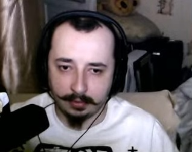
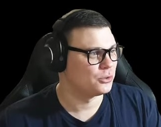

YoutuberInfo
«LUAR»

Основная информация
Обновление: 01.05.23
- Имя: неизвестно
- Фамилия: неизвестно
- Возраст: 36
- Местоположение: Санкт-Петербург
- Аудитория: 22,8 тыс.
- Веб-камера: на трансляции
- Основная игра: My Summer Car
- Второстепенные игры: Infra, Stalker, Wolrd of Tanks,
The Long Drive, Farmer's Life
Вводная информация: слова эксперта Григория Капустина
Канал основывается на гайдах по My Summer Car.
Зачастую, можно найти и развлекательный контент по этой игре.
Помимо этого, часто на канале проводится трансляции.
Часто задаваемые вопросы
- Где можно скачать твой текстур-пак? Ответ: здесь
- Как установить твой текстур-пак? Ответ: здесь
- Как вернуть старые текстуры? Ответ: переустановить игру
- У меня не заводится Сатсума. Что делать?
- Залейте жидкости: тормозная, охлахждающая, масло.
- Залейте топливо. Для Сатсумы: 98 бензин.
- Зарядите аккумулятор.
- Откуда ты узнал о игре My Summer Car? Ответ: от ютубера El Comentale
- Как дела? Старая шл*ха родила
- Как поживаешь? На босую ногу сапог одеваешь)
- Как сам? Как сало килограмм)
Если у вас есть информация по ютуберам, указанных на этой сайте, пишите нам на почту: albert.ivanovMS@gmail.com
или в ВК главного редактора: https://vk.com/id_albertik0
«TheAlive55»

Основная информация
Обновление: 01.05.23
- Имя:Алексей
- Фамилия: Будаев
- Возраст: 30*
- Местоположение: Омск
- Аудитория: 120 тыс.
- Веб-камера: на трансляции*
- Основная игра: Euro Truck Simulator 2
- Второстепенные игры: American Truck Simulator, Omsi 2,
Fernbus Simulator, Tourist Bus Simulator
Вводная информация: слова эксперта Леонида Александрова
90% видео и транслации посвящены игре ETS 2. Это обзоры модов,
"путевые заметки*", трансляции и другой контент по этой игре.
На канале, помимо ETS 2, есть много других игр, начиная с
RDR2, заканчивая Дальнобойщики 2.
Часто задаваемые вопросы
- Как поиграть на твоём выделенном сервере в ETS2? Ответ: здесь
- Где можно установить фирменные покраски "Alive Transportion"? Ответ: ATS,
ETS2*
- Как создать свой выделенный сервер в ETS2? Ответ: здесь
- У тебя есть машина? Если да, то какая? Ответ: Да, Lada Vesta
- Играешь ты в РП-проекты? Если да, в какой? Ответ: GTA 5: Majestic RP
Если у вас есть информация по ютуберам, указанных на этой сайте, пишите нам на почту: albert.ivanovMS@gmail.com
или в ВК главного редактора: https://vk.com/id_albertik0